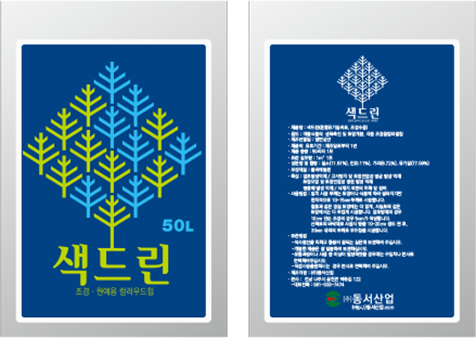

컬러우드칩
국내 최초의 목재 착색 기술로 탄생, 100% 청정 원목을 가공·착색하여 제조한 컬러우드칩

제품기능
- 수분 증발을 억제하여 고사 방지, 겨울에 지온을 유지하여 동해 감소
- 햇빛의 투과량 제한 효과로 잡초 종자의 발아와 생육 억제
- 사람이나 장비로인해 발생하는 토양압밀 감소
- 토양 내 유용미생물의 번식 도움
- 토양침식과 토양풍식 감소, 토양오염 및 토양전염성병균 발생 억제
- 콘크리트 등의 딱딱한 표면에 완충작용, 토양 비산 억제
- 아름다운 조경 창출
- 나무나 기타 조경용 식물을 예초기로부터 보호, 외부에 드러난 나무뿌리 보호
제품의 품질과 사양

| 품질 | -100% 청정 원목 가공 제품 - 동식물에 안전한 착색성분 사용 - 균일한 색상 유지 - 색상 성분의 용달이 일어나지 않음 - 열화에 따른 변색으로부터 3년 이상의 안정성 유지 |
|---|---|
| 성상 | 목재칩 - 수종 : 소나무 | 규격 : 1-4cm(체적의 95%이상 규격 적합) | 수피율 : 0.3% 이하 |
| 색상 | 표준규격 - 갈색, 빨간색, 초록색, 파란색, 노란색 | 주문규격 - 고객 상담 후 생산가능 |
| 포장규격 | 50L, 1000L |
컬러우드칩 색드린을 이용한 멀칭시 기대효과
시공자의 관리
#01
우드칩의 보충관리
- 우드칩의 분해에따라 줄어드는 부피만큼 보충
- 미관상 유지가 필요한 곳은 우드칩의 색깔이 탈색되는 정도에따라 판단
#02
비료사용 관리
- 우드칩의 분해시 미생물 활동으로인한 질소질성분의 결핍
- 식물성장을위한 바람직한 방법은 멀칭 시공 전에 추천비료를 토양에 시비
- 비료를 사용하였는데도 질소질 결핍현상이 2개월 이상이 지속될 경우, 멀칭 처리의 두께 조정
시공단면 모식도
멀칭처리 시공단면
멀칭펜스 시공단면
경관목식재지 시공단면
관목군식지 시공단면
도로중앙분리대 시공단면
경관식재지 시공단면
경계부 경관식재지 시공단면
멀칭 시공 처리구의 기준단면
수목 크기별 멀칭처리구의 규모
| 수간직경(㎜) | 멀칭처리구 직경(㎜) |
|---|---|
| 25 | 1200 |
| 50 | 1800 |
| 75 | 2400 |
| 100 | 300 |